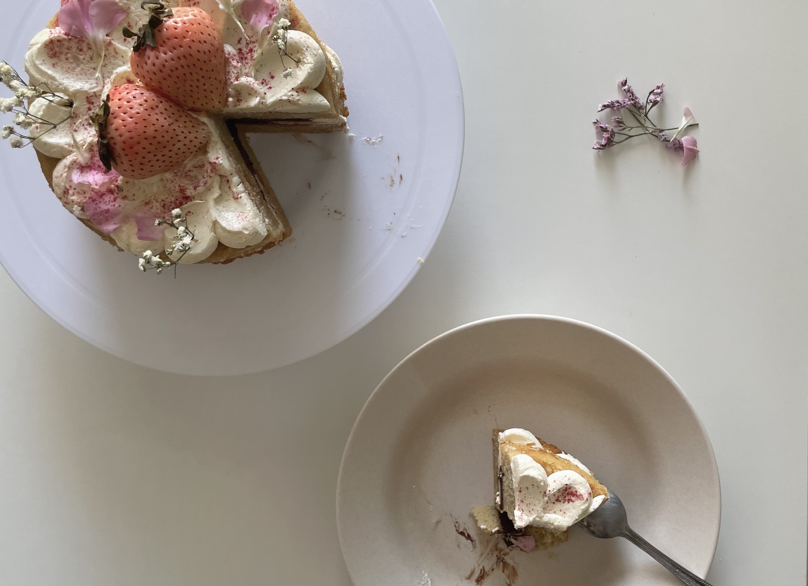
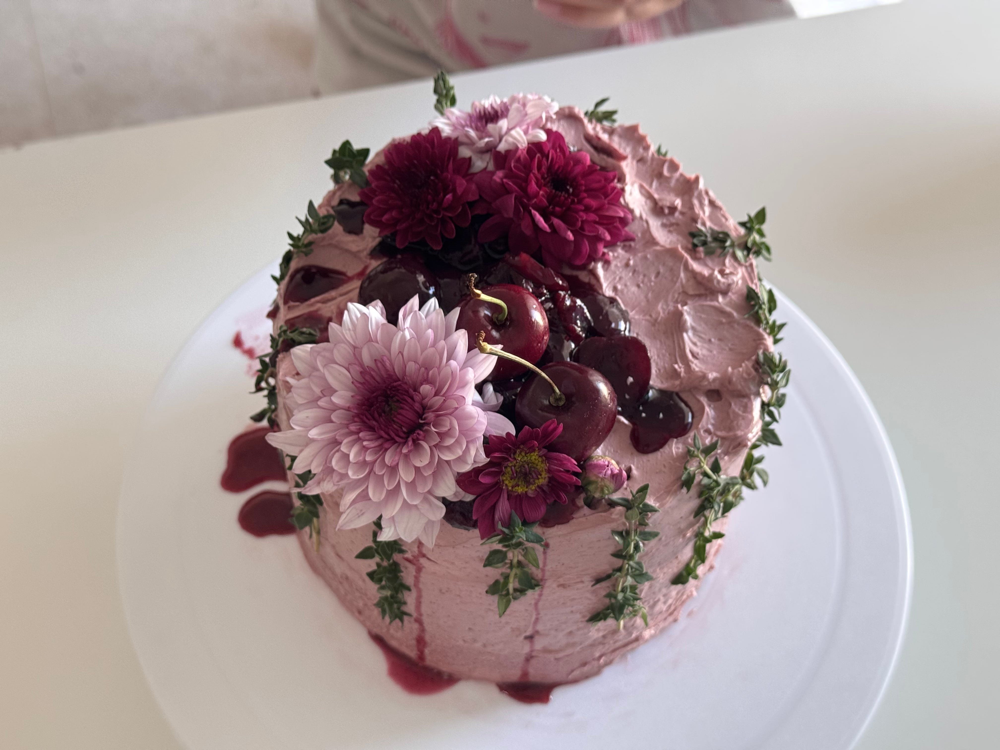
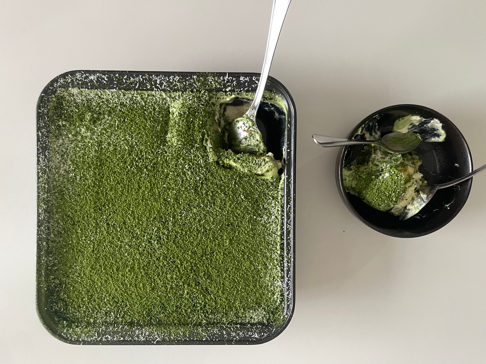

recipe
recipe
liminal spaces and corn basque cheesecake
a hefty rant, but scroll to the bottom for a recipe.
personal bake archive
rambles of my bakes and sometimes maybe recipes too

about
orchidsinovens is a small baking journal: part portfolio, part recipe box, part place to explain why a cake had to become a doll or why corn belongs inside a cheesecake.

instagram and tiktok at orchidsinovens
featured bakes
bake letters
A warm note on jasuke, being back home, in-between chapters, and giving corn the dessert spotlight it deserves.
read full post
A soft, romantic cake entry about pink strawberries, music, doll-like references, and the nonsense that becomes a bake.
read full post
Pinot SMBC, vodka-infused vanilla cherry compote, and a birthday redemption cake with a little grown-up drama.
view profile note
Raffaello-inspired, a little grassy, not-so-traditional, and folded into a ramble about baking as escape.
view profile note
A quiet, sweet note for Persian love cake inspired madeleines.
view profile note